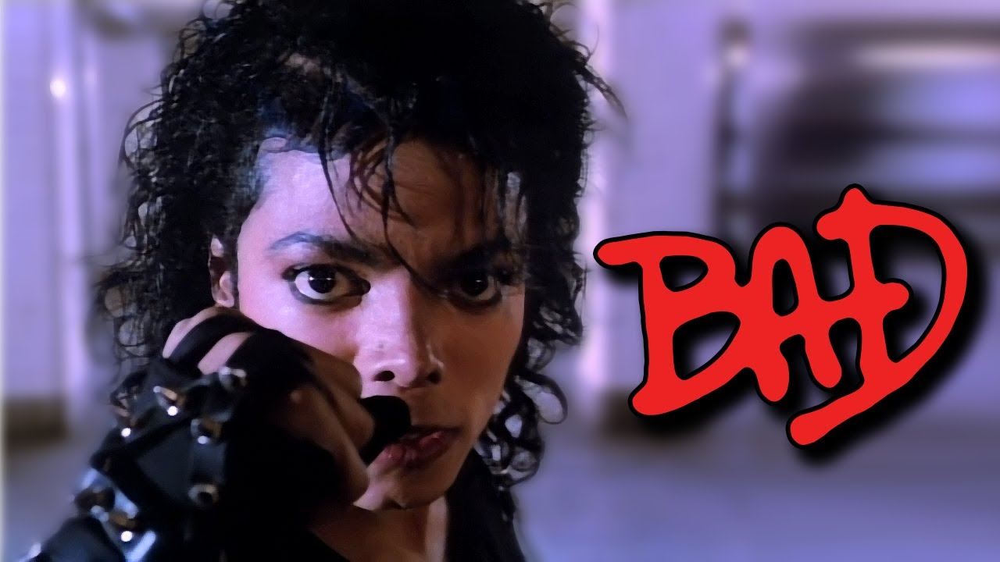

Schimbarea infatisarii Bad
Pielea lui Jackson a fost maronie pe toată durata tinereții, dar începând cu anii '80 a devenit din ce în ce mai deschisă la culoare. Schimbarea a dat naștere unor zvonuri care pretindeau că și-ar fi decolorat pielea. Conform biografiei lui J.Randy Taraborrelli din 1986, Jackson suferea de vitiligo și lupus. Vitiligo ar fi fost cauza decolorării pielii lui Jackson, ambele boli făcându-l sensibil la lumina soarelui. Tratamentul pe care l-a urmat și machiajul folosit pentru a-i masca petele decolorate l-au făcut din ce în ce mai palid. Structura feței s-a schimbat deasemenea. Au apărut speculații cum că a efectuat o serie de operații estetice, la nas, bărbie și buze. La începutul anilor '80 a pierdut din greutate din cauza unei diete și dorinței de a avea un „corp de dansator”. Martorii spuneau că suferă de anorexie. În 1986 a suferit a patra operație la nas și una la bărbie.
Michael Jackson a devenit subiectul unor dezvăluiri senzaționale. În 1986 The National Enquirer a publicat o serie de fotografii cu Jackson într-o camera hiperbarică, susținând că dormea în cameră pentru a încetini procesul de îmbătrânire. Când Jackson a cumpărat un cimpanzeu pe nume Bubbles, de la un laborator, a fost raportat ca fiind un exemplu de „desprindere față de realitate”. Toate aceste evenimente i-au adus și porecla „Wacko Jacko”.
Jackson a jucat în filmul 3-D Captain EO, regizat de Francis Ford Coppola. A fost cel mai scump film produs pe minut, și a fost difuzat la parcurile Disney. Întreaga lume era în așteptarea unui nou mare hit. Deși nu a avut vânzările lui Thriller, albumul Bad lansat în 1987 a fost un adevărat succes comercial, 5 ("I Just Can't Stop Loving You", "Bad", "The Way You Make Me Feel", "Man in the Mirror" și "Dirty Diana") din cele șapte single-uri clasându-se pe primul loc în Billboard Hot 100, cel mai bun album în această privință. Până în anul 2008 albumul s-a vândut în 30 de milioane de copii în întreaga lume.
Turneul mondial Bad a început în 12 septembrie 1987 și s-a încheiat în 14 ianuarie 1989. Numai în Japonia turneul a avut 14 spectacole, atrăgând 570.000 de oameni, aproape triplând vechiul record de 200.000 spectatori într-un singur turneu. A doborât un record în Guinness Book când 504.000 oamenii au asistat la cele 7 spectacole de pe stadionul Wembley. Turneul a avut în total 123 de concerte și o audiența de 4,4 milioane de spectatori, încasările fiind situate în jurul a 125 de milioane de $. Pe timpul turneului Jackson a invitat copii fără posibilități să-i urmărească concertele gratis, a făcut donații spitalelor și orfelinatelor.
